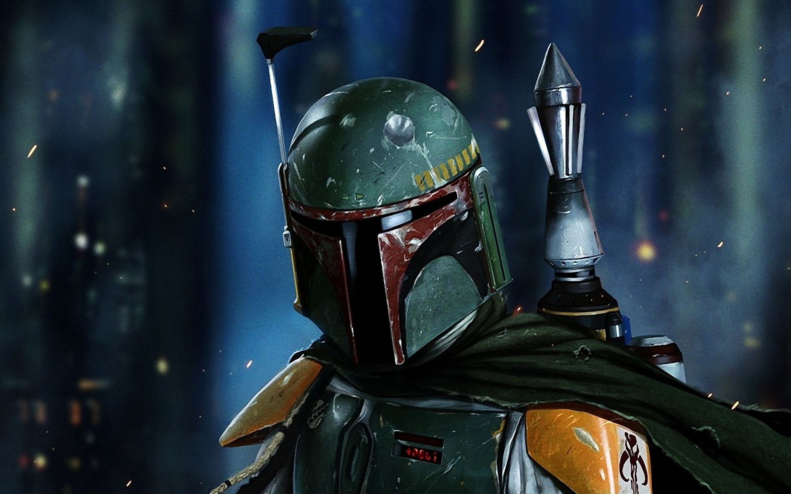

Boba Fett was a Mandalorian warrior and bounty hunter. He was the only unaltered clone of the famed Jango Fett, created in 32 BBY as unit A0050, one of the first of many Fett replicas designed to become part of the Grand Army of the Republic, and was raised as Jango's son. Jango taught Boba much, training him to become a skilled bounty hunter as was his father-figure before him. In 22 BBY, Jango was killed at the Battle of Geonosis, which opened the Clone Wars. Just a boy, Boba was forced to grow up and took to traveling the galaxy. Later, he became a bounty hunter and took assignments from figures such as Jabba the Hutt, and achieved a great status despite being young.
When the Empire was formed in 19 BBY, it was the perfect environment for Fett. During this time, he also married Sintas Vel and had a daughter named Ailyn Vel. Fett became known as the galaxy's best bounty hunter of the next several decades, often working for the Empire. He collaborated with Darth Vader on several occasions, and the Sith Lord even developed a grudging respect for Fett.
In 1 BBY, a year after the Galactic Civil War had begun, Fett was hired to kidnap the Rebel captain Juno Eclipse in order to lure out a clone of Galen Marek. Fett participated in the Battle of Kamino and when Darth Vader was captured and about to be interrogated on Dantooine, the Mandalorian bounty hunter trailed the Rogue Shadow there. Fett made his most notable bounty in 3 ABY, when he captured Rebel hero Han Solo, and delivered him to Jabba the Hutt. A year later, during the Battle of the Great Pit of Carkoon, Fett fought against the group of Rebel rescuers. However, he was inadvertently knocked into the mouth of the Sarlacc by Solo. Though no one in recorded history had ever escaped from the Sarlacc, Fett was able to escape, though not unscathed. Thanks to his iron will and Mandalorian armor, he was able to fight his way out of the beast's belly. Back in action, he resumed his work as a bounty hunter.
After a promise made to a dying Fenn Shysa, Fett became Mandalore and eventually led the Mandalorians through the Yuuzhan Vong War. Originally working as a mercenary for the extra-galactic invaders, Fett later aided the New Republic in their battle against the aliens. When the Yuuzhan Vong assaulted Mandalore and bombarded the planet's surface, a large deposit of Mandalorian iron was unearthed, ironically helping to strengthen the Mandalorians. Later, during the Second Galactic Civil War, Boba, who was still leading the Mandalorians, was plagued by ailing health. He found his granddaughter, Mirta Gev, and the two went on many missions together, even alongside Han Solo. Fett also trained Solo's daughter Jaina to kill her twin brother, Darth Caedus, and assisted the Jedi Coalition in several battles. Ultimately, Fett's training helped Jaina bring down Caedus, though an Imperial nanovirus attack prevented Fett from ever returning to Mandalore.